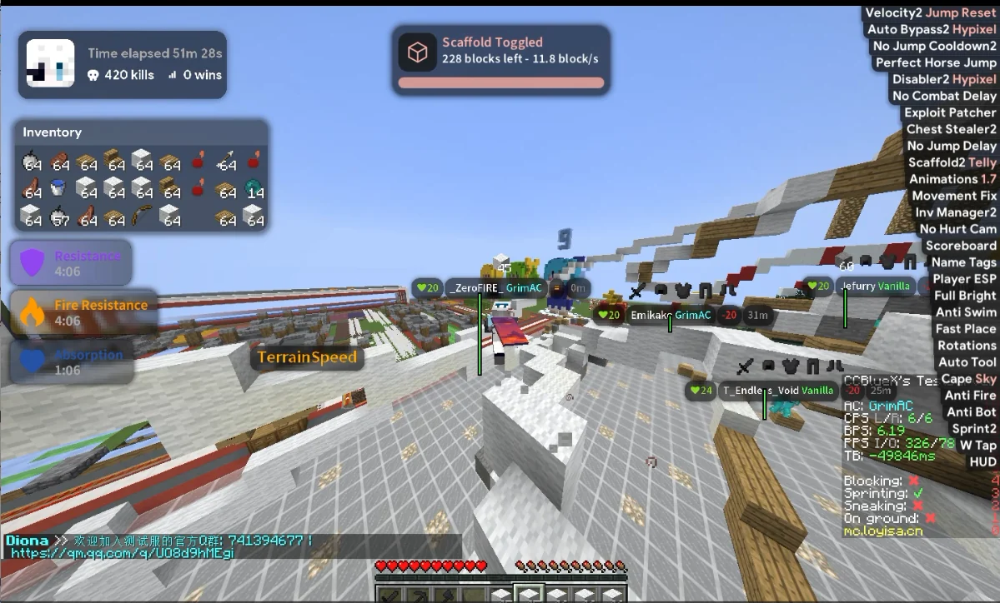
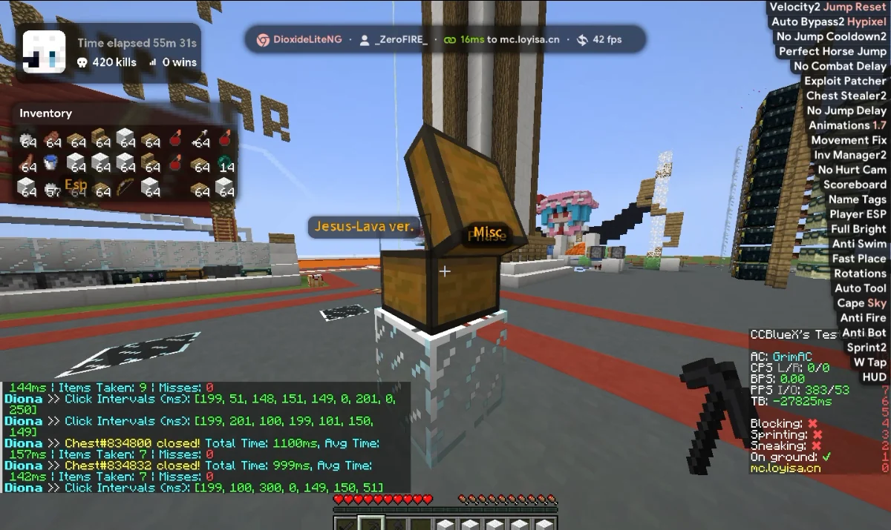
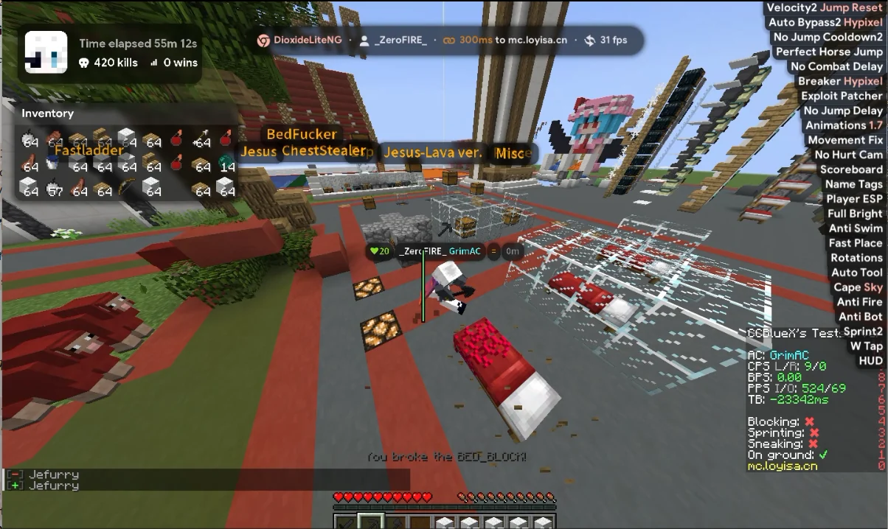

01 / VIDEO
搭桥与靶场
Scaffold 的实时进度条与方块计数（228 blocks left · 11.8 block/s）、TargetHUD 血条、
右侧模块列表随开关滚动；左侧是 Session HUD 与 Inventory HUD。
两段录屏、三张截图，全部来自客户端在服务器里的实际运行画面：HUD、开关提示、模块列表都是真在跑的。 录屏静音自动播放，滚到画面里才开始，离开就暂停；想听声音点右下角的按钮。
Scaffold 的实时进度条与方块计数（228 blocks left · 11.8 block/s）、TargetHUD 血条、
右侧模块列表随开关滚动；左侧是 Session HUD 与 Inventory HUD。
拆床与自动开箱的连续操作：Dynamic Island 显示延迟与帧率，模块列表、药水状态、ChestStealer 日志同时在刷新。

Scaffold 提示条、右上 ArrayList、左侧 Session HUD（51m 28s / 420 kills）与 Inventory HUD、左下药水计时，一屏之内全部到位。

顶部 Dynamic Island 显示 ping 与 FPS，左下是 ChestStealer 的取物日志：Items Taken、Click Intervals、Total Time 逐行滚动。

床方块被破坏的提示、场景里的模块标签（BedFucker / ChestStealer / Jesus-Lava），右侧模块状态仍在实时刷新。